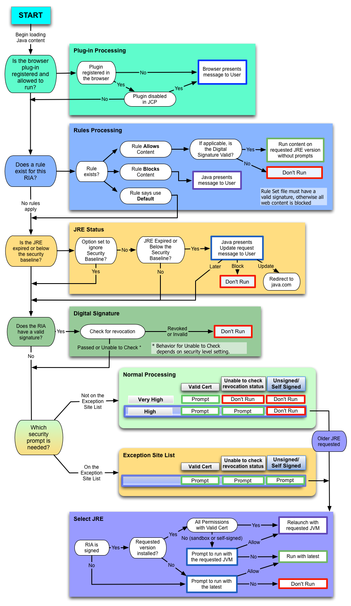

This topic describes the steps in the deployment process that are used to determine if a Java or JavaFX application is allowed to run in the browser or be started from a browser. This process does not apply to standalone or self-contained applications.
When a user launches a Java or JavaFX application that is embedded in a browser or is started from a browser, collectively called Rich Internet Applications (RIAs), a number of checks are made to determine if the RIA is allowed to run, which version of the JRE is used, and which security prompts are shown to the user. The purpose of this topic is to explain those checks and show how the decisions are made.
This topic includes the following sections:
The following flow chart shows a simplified version of the process that is used to deploy a RIA.
Figure 24-1 Deployment Processing Flow Chart
The nodes in the left column of the chart provide a high-level view of what happens after a user starts a RIA. The following steps describe the main process. When a decision is made to either run or block the RIA, any remaining steps are skipped.
Begin loading Java content.
When a user opens an HTML page that contains an applet, or starts a Java Web Start application, the content starts to load. If no JRE is installed, the browser notifies the user that the plug-in is missing and the RIA is not run.
Is the browser plug-in registered and allowed to run?
Check that the plug-in is registered and enabled. See Plug-in Processing for more information.
Does a rule exist for this RIA?
If a deployment rule set exists, then look for a rule that matches the RIA. If a matching rule is found, then the action for the rule is taken. If the action is block, then the RIA is not run. If the action is run, then the RIA is allowed to run. If no rule is found, or the action is default, then the deployment process continues with the next step in the flow chart. See Rules Processing for more information.
Is the JRE expired or below the security baseline?
Ensure that a valid JRE is installed to run the RIA. If not, then give the user the option to update the JRE. See JRE Status for more information.
Does the RIA have a valid signature?
Check if the RIA is signed. If so, then ensure that the signature is valid. See Digital Signature for more information.
Which security prompt is needed?
Determine which security prompt to show based on the RIA, the setting of the security level in the Java Control Panel, and the exception site list. If an older JRE is requested, then choose the JRE that is used to run the RIA. See Security Prompts for more information.
If the RIA has additional artifacts such as resources or extensions that do not meet security requirements, a RIA can be blocked after initially being allowed to run. Make sure that all artifacts are signed, and accessed from approved locations specified by JAR file manifest attributes. If you are using a Deployment Rule Set, make sure that you have rules that match all artifacts. If you are using the Exception Site List, make sure that all locations used by the RIA appear in the list.
When content starts to load, plug-in processing answers the question in the second step of the deployment process, "Is the browser plug-in registered and allowed to run?" This process is shown in the Plug-in Processing box in Figure 24-1, which is connected to the node for this step and shown to the right of the node.
If the plug-in is not registered, then the browser notifies the user that the plug-in is missing and the RIA is not run.
If the plug-in is registered, then deployment properties are checked to see if the plug-in is disabled. The browser is also checked to see if the browser has disabled the plug-in. If the plug-in is disabled, then the user is notified and the RIA is not run. If the plug-in is enabled, then the deployment process continues with Rules Processing. See Section 20.4, "Security" in Chapter 20, "Java Control Panel" for information on disabling and enabling the Java Plug-in. If the plug-in was disabled by the browser, see the documentation for the browser.
Rules processing answers the question in the third step of the deployment process, "Does a rule exist for this RIA?" This process is shown in the Rules Processing box in Figure 24-1, which is connected to the node for this step and shown to the right of the node. Rules processing looks for a valid Deployment Rule Set file. See Chapter 28, "Deployment Rule Set" for information on this feature.
If no deployment rule set is found, then the deployment process continues with JRE Status.
If an invalid deployment rule set is found, then an error message is shown to the user and the RIA is blocked.
If a valid deployment rule set is found, then one of the following actions is performed:
If no rule matches the RIA, then the deployment process continues with JRE Status.
If the RIA matches a rule, then one of the following actions is performed:
If the rule allows the RIA to run, then the signature for the RIA is checked. If the signature is valid, or the RIA is unsigned, then the RIA is run on the requested version of the JRE without showing any security prompts. If the signature for the RIA is not valid, then a security warning is shown to the user and the RIA is blocked.
For rules processing, a signature that contains a certificate that is expired or a certificate whose certificate revocation status cannot be checked is considered valid, and the RIA is run. An invalid signature is one that contains a certificate that is blacklisted, revoked, or malformed in some way.
If the rule blocks the RIA, then a security warning is shown to the user and the RIA is blocked.
If the rule requests default processing for the RIA, then the deployment process continues with Digital Signature.
JRE status processing answers the question in the fourth step of the deployment process, "Is the JRE expired or below the security baseline?" This process is shown in the JRE Status box in Figure 24-1, which is connected to the node for this step and shown to the right of the node. If the option for ignoring the security baseline is set, then the JRE status is not checked and the deployment process continues with Digital Signature. The deployment property deployment.expiration.check.enabled is used to indicate if the security baseline is ignored. See Chapter 21, "Deployment Configuration File and Properties" for information on this property.
If the security baseline is not ignored, the JRE is checked to see if it is expired or below the security baseline. If neither condition is true, then the deployment process continues with Digital Signature. See Section 23.1, "Setting the Security Level of the Java Client" for information on the JRE expiration date. See the Update Release Notes for your version of the JDK for information on the security baseline.
If the JRE is either expired or below the security baseline, the user is given the option to update the JRE. Depending on the user's choice, one of the following actions is performed:
If the user chooses to update later, then the deployment process continues with Digital Signature.
If the user chooses to block the RIA, then the RIA is not run.
If the user chooses to update the JRE, then the user is directed to the download page at java.com.
Digital signature processing answers the question in the fifth step of the deployment process, "Does the RIA have a valid signature?" This process is shown in the Digital Signature box in Figure 24-1, which is connected to the node for this step and shown to the right of the node. If the RIA is unsigned, then the deployment process continues with Security Prompts.
If the RIA is signed, then the certificate used to sign the RIA is validated. If the certificate is invalid or revoked, then the RIA is blocked.
If the RIA is signed with a valid certificate, or if the certificate is expired or the revocation status cannot be checked, then the deployment process continues with Security Prompts. The action taken for RIAs that have certificates that cannot be checked depends on the setting of the Security Level in the Java Control Panel.
See Signing and Verifying JAR Files for information on digital signatures.
The final step in the deployment process is to determine if the RIA is run, and answers the question in the last step of the deployment process, "Which security prompt is needed?" If the RIA is run, this step also determines which version of the JRE is used when an older version is requested. The Normal Processing box and Exception Site List box in Figure 24-1 show the process for determining if the RIA is run and which security prompt is shown. These boxes are connected to the node for this step and shown to the right of the node.
The process for determining which JRE is used when an older version is requested is shown in the Select JRE box in Figure 24-1, which is connected to the boxes for determining if the RIA is run and which security prompt is shown.
At this point in the process, the decision to run or block the RIA, and the choice of the security prompt to show, is based on the following criteria:
The setting of the Security Level in the Java Control Panel, the default is High. See Section 20.4, "Security" in Chapter 20, "Java Control Panel" for information on the Security Level.
The presence of a signing certificate for the RIA
The status of the certificate that was used to sign the RIA
The inclusion of the location of the RIA in the exception site list
Note: If the user previously selected the option to not show a prompt again, then that prompt is suppressed. The response the user gave when the option to suppress was selected is used instead of showing the prompt again.
The following table shows if a RIA is run or blocked when the location of the RIA is not on the exception site list.
| Security Level | Run with Prompt | Block |
|---|---|---|
| Very High | Only RIAs that are signed with a valid certificate located in the Signer CA keystore are allowed to run. The manifest for the main JAR file for the RIA must contain the Permissions attribute. See Chapter 26, "JAR File Manifest Attributes for Security" for information on the Permissions attribute. | The following RIAs are blocked:
|
| High | RIAs that are signed with a valid certificate located in the Signer CA keystore, or a certificate whose revocation status cannot be checked are allowed to run. The manifest for the main JAR file for the RIA must contain the Permissions attribute. See Chapter 26, "JAR File Manifest Attributes for Security" for information on the Permissions attribute. | The following RIAs are blocked:
|
If the RIA is allowed to run and requests an older version of the JRE, then the deployment process continues with Select JRE.
The Exception Site List feature, which was introduced in Java 7 Update 51, provides a way for users to run RIAs that would be blocked because they do not meet the current security requirements. RIAs that are launched from sites in the exception site list are allowed to run with the appropriate security prompts. See Chapter 29, "Exception Site List" for more information on this feature.
If the RIA is allowed to run and requests an older version of the JRE, then the deployment process continues with Select JRE.
It is recommended that the most recent version of the JRE always be used. However, if a RIA is not compatible with this version of the JRE, the version that is required to run the RIA can be requested in the JNLP file or applet tag.
When an older version is requested, one of the following actions is performed, based on the criteria described in the sections that follow:
The RIA is restarted with the requested version of the JRE using Secure Static Versioning (SSV).
The RIA is run with the latest version of the JRE that is installed.
The RIA is blocked.
The RIA is restarted with the requested version of the JRE using SSV when the following conditions are met:
RIA is signed.
The requested version of the JRE is installed.
For privileged RIAs, which request all permissions, the RIA is signed with a valid certificate.
For sandbox RIAs or self-signed RIAs, the user agrees to run with the requested version when prompted.
The following table describes the cases in which the RIA is run with the latest version of the JRE that is installed, instead of the requested version.
| Signing Status | Requested Version is Installed | Type of RIA | Response to Prompt |
| Signed | Yes | Sandbox, self-signed | User does not agree to run with requested version |
| Signed | No | All | User agrees to run with the latest version that is installed |
| Unsigned | Ignored | All | User agrees to run with the latest version that is installed |